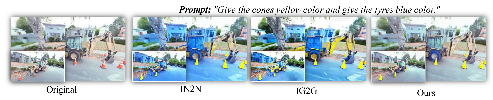
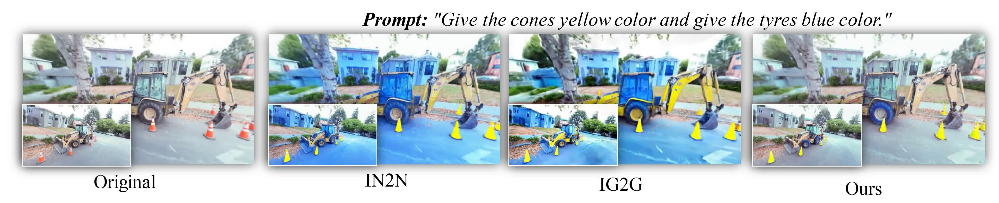

We introduce 3DEgo to address a novel problem of directly synthesizing photorealistic 3D scenes from monocular videos guided by textual prompts. Conventional methods construct a text-conditioned 3D scene through a three-stage process, involving pose estimation using Structure-from-Motion (SfM) libraries like COLMAP, initializing the 3D model with unedited images, and iteratively updating the dataset with edited images to achieve a 3D scene with text fidelity. Our framework streamlines the conventional multi-stage 3D editing process into a single-stage workflow by overcoming the reliance on COLMAP and eliminating the cost of model initialization. We apply a diffusion model to edit video frames prior to 3D scene creation by incorporating our designed noise blender module for enhancing multi-view editing consistency, a step that does not require additional training or fine-tuning of T2I diffusion models. 3DEgo utilizes 3D Gaussian Splatting to create 3D scenes from the multi-view consistent edited frames, capitalizing on the inherent temporal continuity and explicit point cloud data. 3DEgo demonstrates remarkable editing precision, speed, and adaptability across a variety of video sources, as validated by extensive evaluations on six datasets, including our own prepared GS25 dataset.
@misc{iqbal2023unsupervised,https://github.com/orgs/community/discussions/54546
author = {Umar Khalid and Hasan Iqbal and Azib Farooq and Jing Hua and Chen Chen},
title = {3DEgo: 3D Editing on the Go!},
year = {2024},
eprint = {2305.198671},
archivePrefix={arXiv},
primaryClass={eess.IV}
} 
